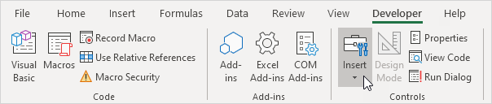
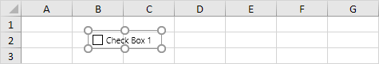
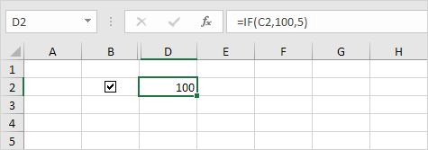
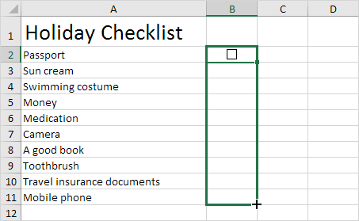
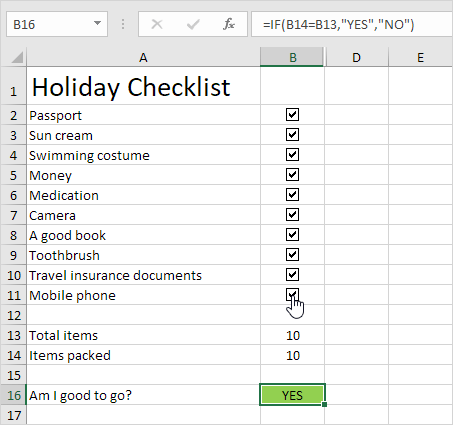
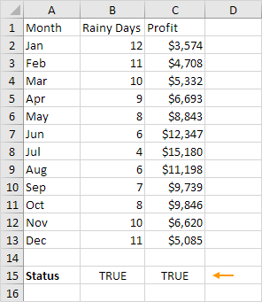
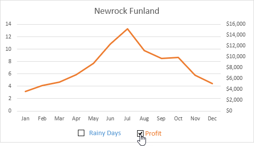
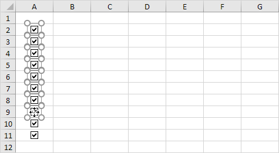

Jika Anda sering menggunakan perintah Excel, Anda dapat menambahkannya ke Toolbar Akses Cepat. Secara default, Quick Access Toolbar berisi empat perintah: AutoSave, Save, Undo, dan Redo.
Toolbar Akses Cepat 101
Untuk menambahkan perintah ke Toolbar Akses Cepat, jalankan langkah-langkah berikut.
1. Klik kanan perintah tersebut, lalu klik Add to Quick Access Toolbar.

2. Anda sekarang dapat menemukan perintah ini di Quick Access Toolbar.

3. Untuk menghapus perintah dari Quick Access Toolbar, klik kanan perintah tersebut, lalu klik Remove from Quick Access Toolbar.
Perintah Tidak di Ribbon (Commands Not in the Ribbon)
Untuk menambahkan perintah ke Toolbar Akses Cepat yang tidak ada di Ribbon, jalankan langkah-langkah berikut.
1. Klik panah bawah.
2. Klik More Commands.

3. Di bawah Choose commands from, pilih Commands Not in the Ribbon.
4. Pilih perintah dan klik Add.

Catatan: secara default, Excel mengkustomisasi Toolbar Akses Cepat untuk semua dokumen (lihat panah oranye). Pilih workbook (buku kerja) yang disimpan saat ini untuk hanya menyesuaikan Toolbar Akses Cepat untuk buku kerja ini.
5. Klik Oke.
6. Anda sekarang dapat menemukan perintah ini di Quick Access Toolbar.

Ribbon di Excel dapat disesuaikan. Anda dapat dengan mudah membuat tab Anda sendiri dan menambahkan perintah ke dalamnya.
1. Klik kanan di mana saja pada Ribbon, lalu klik Kustomisasi Ribbon.

2. Klik Tab Baru.

3. Tambahkan perintah yang Anda suka.

4. Ganti nama tab dan grup.

Catatan: Anda juga dapat menambahkan grup baru ke tab yang ada. Untuk menyembunyikan tab, hapus centang pada kotak centang yang sesuai. Klik Reset, Reset semua kustomisasi, untuk menghapus semua kustomisasi Ribbon.
5. Klik Oke.
Hasil.

Aktifkan tab Pengembang di Excel jika Anda ingin membuat makro, mengekspor dan mengimpor file XML atau menyisipkan kontrol. Untuk mengaktifkan tab Pengembang, jalankan langkah-langkah berikut.
1. Klik kanan di mana saja pada Ribbon, lalu klik Customize the Ribbon.

2. Di bawah Customize the Ribbon, di sisi kanan kotak dialog, pilih Main Tabs (jika perlu).
3. Centang kotak Developer.

4. Klik Oke.
5. Anda dapat menemukan tab Developer (Pengembang) di sebelah tab View.
Status bar di Excel bisa sangat berguna. Secara default, Status Bar di bagian bawah jendela menampilkan average, count dan sum sel yang dipilih.
Status Bar 101
Status Bar di Excel dapat menghitungnya untuk Anda.
1. Pilih Range A1:A3.

2. Lihat Status Bar untuk melihat average, count dan sum sel-sel ini.

3. Untuk mengubah tampilan buku kerja dengan cepat, gunakan pintasan 3 tampilan pada Status Bar.

Catatan: kunjungi halaman kami tentang tampilan buku kerja untuk mempelajari lebih lanjut tentang topik ini.
4. Gunakan penggeser zoom pada Status Bar untuk memperbesar atau memperkecil dengan cepat ke persentase yang telah ditentukan sebelumnya.
Catatan: gunakan Ribbon untuk memperbesar ke persentase tertentu atau untuk memperbesar pilihan.
Sesuaikan Status Bar
Banyak opsi Status Bar dipilih secara default. Klik kanan Status Bar untuk mengaktifkan lebih banyak opsi.
1. Klik kanan Status Bar.
2. Misalnya, klik Caps Lock.

Catatan: ini tidak mengaktifkan Caps Lock (lihat gambar di atas, Caps Lock masih dimatikan). Status Bar menampilkan status Caps Lock sekarang.
3. Tekan tombol Caps Lock pada keyboard Anda.
4. Excel menampilkan teks Caps Lock di Status Bar.

5. Klik kanan Status Bar.
6. Misalnya, klik Minimum.

7. Pilih Range A1:A3.
8. Lihat Status Bar untuk melihat average, count, minimum dan sum sel-sel ini.

Rahasia Status Bar
Inilah sedikit rahasianya: Excel menggunakan Status Bar dalam banyak situasi lain. Jika Anda tidak menyukai ini, sembunyikan Status Bar.
1. Misalnya, filter tabel .
2. Excel menggunakan Status Bar untuk menampilkan jumlah catatan yang terlihat.

3. Arahkan kursor ke sel dengan satu atau beberapa komentar .

4. Excel menggunakan Status Bar untuk menampilkan nama penulis.
5. Jika Anda memiliki Excel 2016, gunakan pintasan Ctrl+Shift+F1 untuk menyembunyikan Ribbon dan Status Bar.
6. Untuk hanya menyembunyikan Status Bar, tambahkan baris kode berikut ke Workbook Open Event :
Application.DisplayStatusBar = False
7. Gunakan properti StatusBar di Excel VBA untuk menampilkan pesan pada status bar.

Catatan: jika Anda baru menggunakan Excel, Anda dapat melewati langkah 6 dan langkah 7.
 unduh file Excel dan coba masukkan fungsi-fungsi ini.
unduh file Excel dan coba masukkan fungsi-fungsi ini.
Memasukkan kotak centang di Excel itu mudah. Misalnya, gunakan kotak centang untuk membuat daftar periksa atau Chart dinamis. Anda juga dapat menyisipkan simbol tanda centang.
Sisipkan Kotak Centang
Untuk menyisipkan kotak centang , jalankan langkah-langkah berikut.
1. Pada tab Pengembang, di grup Kontrol, klik Sisipkan.

2. Klik Check Box di bagian Kontrol Formulir.

3. Misalnya, gambar checkbox di sel B2.

4. Untuk menghapus "Check Box 1", klik kanan checkbox, klik teks dan hapus.
Tautkan Checkbox
Untuk menautkan checkbox ke sel, jalankan langkah-langkah berikut.
1. Klik kanan checkbox dan klik Kontrol Format.

2. Tautkan checkbox ke sel C2.

3. Uji checkbox.

4. Sembunyikan kolom C.
5. Misalnya, masukkan fungsi IF sederhana .

6. Hapus centang pada kotak centang.

Catatan: baca terus untuk beberapa contoh keren.
Buat Daftar Periksa (Checklist)
Untuk membuat checklist, jalankan langkah-langkah berikut.
1. Gambar kotak centang di sel B2.
2. Klik di sudut kanan bawah sel B2 dan seret ke bawah ke sel B11.

3. Klik kanan checkbox pertama dan klik Kontrol Format.

4. Tautkan checkbox ke sel di sebelahnya (sel C2).
5. Ulangi langkah 4 untuk checkbox lainnya.
6. Sisipkan fungsi COUNTIF untuk menghitung jumlah barang yang dikemas.

7. Sembunyikan kolom C.
8. Sisipkan fungsi IF yang menentukan apakah Anda siap melakukannya.
9. Klik semua checkbox.

Catatan: kami membuat aturan pemformatan bersyarat untuk secara otomatis mengubah warna latar belakang sel B16. Cobalah sendiri. Unduh file Excel dan uji checklist (lembar kedua).
Chart Dinamis
Mari kita lihat satu lagi contoh keren yang menggunakan kotak centang. Sebuah grafik dinamis.
1. Misalnya, buat grafik kombinasi dengan dua seri data (Hari Hujan dan Untung).
2. Tambahkan dua checkboxes.
3. Klik kanan checkbox pertama dan klik Kontrol Format. Tautkan checkbox ini ke sel B15.
4. Klik kanan checkbox kedua dan klik Kontrol Format. Tautkan checkbox ini ke sel C15.

5. Hapus centang pada checkbox kedua. Sel C15 di bawah berubah menjadi FALSE.
Sekarang kita akan membuat dua seri data baru.
6. Masukkan fungsi IF yang ditunjukkan di bawah ini. Gunakan Fill Handle untuk menyalin rumus ini ke sel F13.
7. Ulangi langkah ini untuk seri data Laba baru.
Penjelasan: jika checkbox dicentang, seri data lama dan baru adalah sama. Jika checkbox tidak dicentang, seri data baru akan berubah menjadi Range dengan kesalahan #N/A.
8. Gunakan seri data baru untuk membuat Chart kombinasi. Untuk mencapai ini, pilih Chart, klik kanan, lalu klik Pilih Data.

9. Hapus centang pada checkbox pertama dan centang kotak kedua.

Catatan: coba sendiri. Unduh file Excel dan uji Chart dinamis (lembar ketiga).
Hapus Checkboxes
Untuk menghapus beberapa checkboxes, jalankan langkah-langkah berikut.
1. Tahan Ctrl dan gunakan tombol kiri mouse untuk memilih beberapa checkboxes.

2. Tekan Hapus.

Powerful Checkboxes
Terakhir, Anda dapat menggunakan VBA untuk membuat checkboxes yang kuat di Excel. Alih-alih menyisipkan kontrol Formulir, cukup masukkan kontrol ActiveX.
1. Sisipkan checkbox (kontrol ActiveX).
2. Pada langkah 6, Anda dapat menambahkan baris kode Anda sendiri untuk mengotomatiskan semua jenis tugas. Misalnya, tambahkan baris kode berikut untuk menyembunyikan dan menampilkan kolom F.
If CheckBox1.Value = True Then Columns("F").Hidden = True
If CheckBox1.Value = False Then Columns("F").Hidden = False


Catatan: mungkin pengkodean adalah satu langkah terlalu jauh untuk Anda pada tahap ini, tetapi ini menunjukkan kepada Anda salah satu dari banyak fitur hebat lainnya yang ditawarkan Excel.